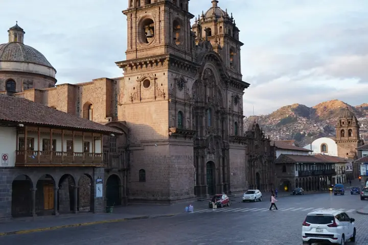
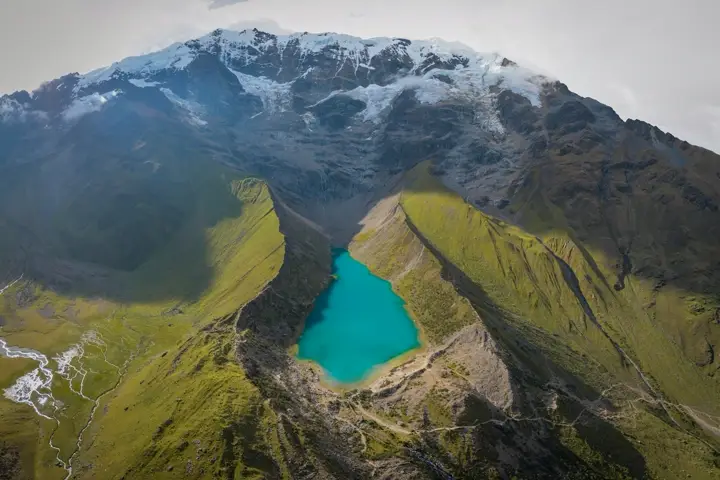
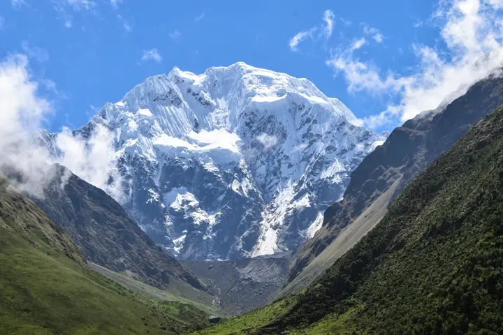
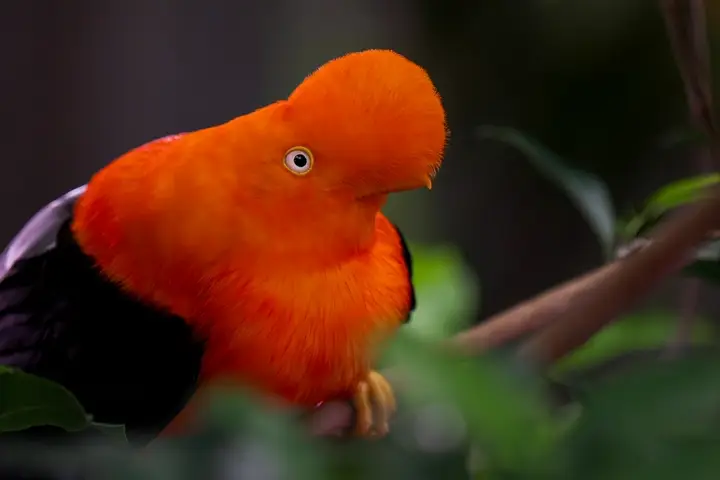
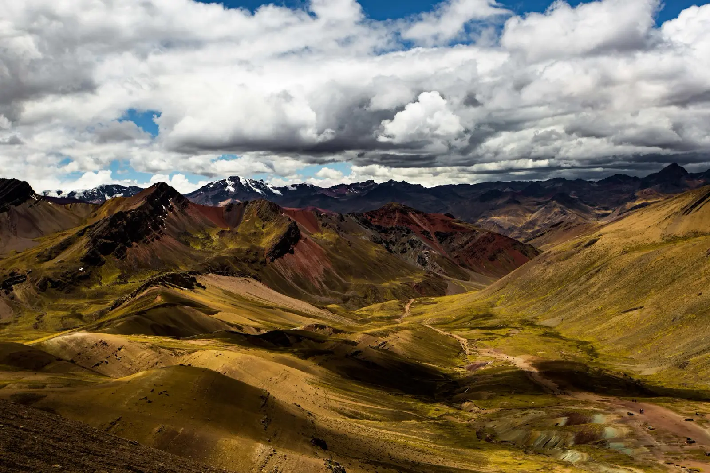
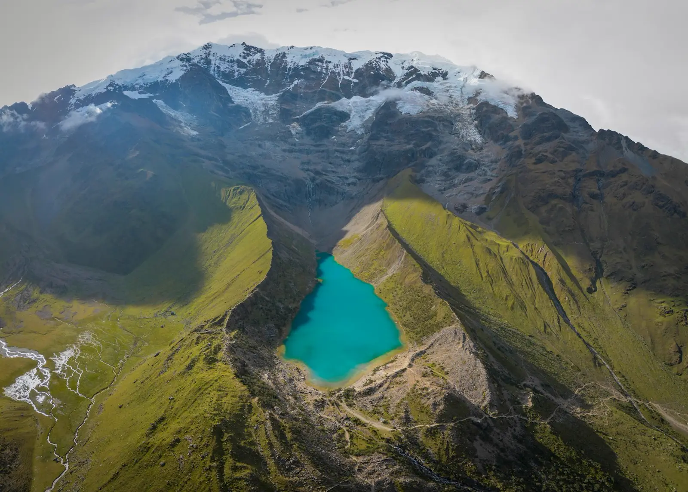

Agencia de viajes en Cusco
Tours a Machu Picchu, Cusco y Tambopata
Del Valle Sagrado a la selva amazónica, con una agencia de Cusco.
01
Tours a Machu Picchu
El Valle Sagrado, una noche al pie de la montaña y la ciudadela inca con guía.

02
Tours en Cusco
El City Tour, el Valle Sagrado y el Valle Sur: el Cusco inca y colonial.
-

Medio día Fácil · 3,400 a 3,700 m City Tour Cusco Qorikancha · Sacsayhuamán · Q'enqo · Puka Pukara S/ 40 por personaVer tour → -
 1 día
Fácil · hasta 3,760 m
Valle Sagrado de los Incas
[Lugares por confirmar]
S/ 85 por personaVer tour →
1 día
Fácil · hasta 3,760 m
Valle Sagrado de los Incas
[Lugares por confirmar]
S/ 85 por personaVer tour →
- Valle Sur[Foto por conseguir][Duración por confirmar] Fácil · hasta 3,300 m Valle Sur [Lugares por confirmar] S/ 50 por personaVer tour →
03
Caminatas y montañas
La Montaña de 7 Colores, Palcoyo, Humantay, las Siete Lagunas, Waqrapukara y el Salkantay.
-
 1 día
Exigente · más de 5,000 m
Montaña de 7 Colores
Vinicunca
S/ 75 por personaVer tour →
1 día
Exigente · más de 5,000 m
Montaña de 7 Colores
Vinicunca
S/ 75 por personaVer tour →
-

1 día Exigente · 4,200 m Laguna Humantay Laguna Humantay Precio por confirmarVer tour → -

[Días por confirmar] Exigente · paso a unos 4,600 m Caminata al Salkantay Salkantay US$ 380 por personaVer tour → - Montaña de Palcoyo[Foto por conseguir]1 día Moderada · más de 4,900 m Montaña de Palcoyo Palcoyo S/ 95 por personaVer tour →
04
Tambopata y Manu
La Amazonía peruana: collpas de guacamayos, el lago Sandoval, noches en albergue y el bosque nublado del Manu.
-
 4 días / 3 noches
Fácil · selva baja
Gran experiencia en Tambopata · 4 días / 3 noches
Puerto Maldonado · Lago Sandoval · Collpa de loros La Cachuela · Familia Matsiguenka
US$ 290 por personaVer tour →
4 días / 3 noches
Fácil · selva baja
Gran experiencia en Tambopata · 4 días / 3 noches
Puerto Maldonado · Lago Sandoval · Collpa de loros La Cachuela · Familia Matsiguenka
US$ 290 por personaVer tour →
-
 3 días / 2 noches
Fácil · selva baja
Experiencia completa de Tambopata · 3 días / 2 noches
Puerto Maldonado · Familia Matsiguenka · Lago Sandoval · Isla de Monos Rolín
Precio por confirmarVer tour →
3 días / 2 noches
Fácil · selva baja
Experiencia completa de Tambopata · 3 días / 2 noches
Puerto Maldonado · Familia Matsiguenka · Lago Sandoval · Isla de Monos Rolín
Precio por confirmarVer tour →
-
 2 días / 1 noche
Fácil · selva baja
Collpa Chuncho · 2 días / 1 noche
Puerto Maldonado · Río Tambopata · Torre de observación · Collpa Chuncho
US$ 250 por personaVer tour →
2 días / 1 noche
Fácil · selva baja
Collpa Chuncho · 2 días / 1 noche
Puerto Maldonado · Río Tambopata · Torre de observación · Collpa Chuncho
US$ 250 por personaVer tour →
-

4 días / 3 noches Moderada · de 3,600 m a selva baja Manu 4 días / 3 noches Paucartambo · Ninamarca · Bosque nublado · Pilcopata US$ 270 por personaVer tour →
05
Puno y el Lago Titicaca
El lago navegable más alto del mundo y las islas flotantes de los Uros.






06 — Destinos
07
¿Por qué viajar con Inkas Golden?
- 1
Agencia de Cusco
Estamos en Cusco: te atendemos antes, durante y después del viaje. [Dirección de la oficina por confirmar]
- 2
Más de 20 años en el turismo
Llevamos más de 20 años organizando viajes desde Cusco.
- 3
Guías en tu idioma
Guías en español e inglés, y en otros idiomas si nos lo pides al reservar.
- 4
Paga como prefieras
Yape, Plin, transferencia bancaria, tarjeta, PayPal o efectivo.
08
Lo que dicen nuestros viajeros
[Reseñas reales de Google: se juntan cuando la agencia tenga su Perfil de Negocio]
¿El precio es por persona?
Sí. Todos los precios de la web son por persona. Para grupos o un tour privado, escríbenos y te cotizamos.
¿Cómo puedo pagar?
Con Yape, Plin, transferencia bancaria, tarjeta, PayPal o en efectivo. Antes de cualquier pago te confirmamos por WhatsApp la disponibilidad y el precio.
¿En qué idioma es el guía?
Nuestros guías hablan español e inglés. Si necesitas otro idioma, pídelo al reservar y lo coordinamos.
¿Dónde y a qué hora me recogen?
En los tours desde Cusco, en tu hotel. La hora exacta depende del tour: te la confirmamos por WhatsApp al reservar. [Horarios de recojo de cada tour: por confirmar]
¿Qué calzado necesito?
Para los tours culturales bastan zapatillas cómodas. Para las montañas y las caminatas, zapatillas de trekking o con buena suela, porque hay tramos de tierra y piedra. En la selva, calzado que se pueda mojar.
¿Cuál es la mejor época para viajar a Cusco y Machu Picchu?
La temporada seca, de mayo a septiembre, tiene cielos más despejados. De diciembre a marzo llueve más, pero hay menos gente.
¿Qué es el soroche y cómo evitarlo?
Es el malestar por la altura: Cusco está a unos 3,400 m. Descansa el primer día, come liviano, toma bastante agua y deja las montañas para después.
¿Cómo llego a Tambopata?
En avión desde Cusco o Lima hasta Puerto Maldonado, o en bus desde Cusco por la carretera Interoceánica. Desde Puerto Maldonado, los albergues se alcanzan en bote.

¿Listo para viajar?